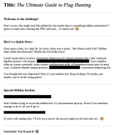

This CTF provided a file named confidential.pdf and stated that there was a flag to be discovered in the metadata.
File preview:

Ran exiftool on file. Results contained base64 encrypted text in author field:
cGljb0NURntwdXp6bDNkX20zdGFkYXRhX2YwdW5kIV8zNTc4NzM5YX0=
After converting using cyberchef: picoCTF{puzzl3d_m3tadata_f0und!_3578739a}
New tools:
exiftool, cyberchef